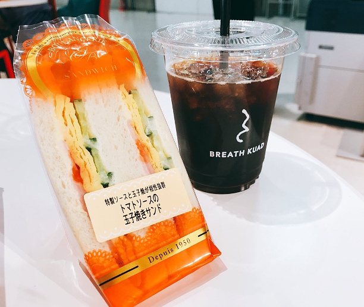

井町 諳
1998年 2月23日 生まれ O型
好きなもの：ゲーム、美味しいもの、カフェ、心が動かされるもの全般
京都造形芸術大学 在籍
出身地：東京都新宿
３歳までは岩手県二戸市。心のふるさとである。幼少期から各地を転々とし、現在は関西に在住。
二戸市オススメポイント
雄大な自然に囲まれて、夏はハイキング、冬はスキーやスノボーが楽しめる安比高原や、冬になると白鳥が集まる、馬渕川があったりします。
ひっつみ汁、せんべい汁、へっちょこ団子、など岩手ならではの郷土料理も美味しい。
その他にも....
パンの中身のクリームを選べる丹市パンさん
などなど美味しいものがたくさんあります！
LOVE
ペルソナシリーズ
現代の日本を舞台に「ペルソナ能力」に目覚めた主人公達が、仲間と協力して事件を解決してゆく大人気RPG。
その数あるペルソナシリーズの中でも、一番好きなナンバリングを選ぶとしたら、ペルソナ３。
高校２年生の時に初めてペルソナ３に触れて以来、年に一回はペルソナシリーズのゲームミュージックを主軸にしたライブに参戦したりして、ずっと追いかけています。
都会を舞台にしたスタイリッシュな世界観、人間味溢れる個性的で魅力的なキャラクターたちは本当に生きているかのよう。
そして何よりオシャレなBGM！
雰囲気を例えるならば、静かで、冷たくて、ちょっと人恋しくて切なくなる。深夜の雰囲気が好きな人は絶対にハマると思います。
Harry Potter
言わずと知れた、全世界的ファンタジー作品。
幼い頃に両親を亡くし、親戚の叔父と叔母に引き取られて報われない日々を送っていたハリー。
そんな彼の11歳の誕生日に、ホグワーツ魔法魔術学校から入学許可証が届きます。
自身に魔法使いの血が流れていることを知ったハリーは、最初は戸惑いながらも入学することを決意するのでした。
作者のJ・K・ローリングが物語の着想を得たのは、なんと４時間遅れの電車の待ち時間。突然、魔法学校に通う男の子の話で頭がいっぱいになったそう。
その時、ローリングはペンを持っていなかったため、頭の中でずっとアイデアを考え続け、帰宅するやいなや物語を書き始めました。
しばらくして彼女は離婚を経験し、シングルマザーとなります。生活保護を受けている極貧の中、小さなコーヒーショップの隅で毎日たった一杯のコーヒーを飲みながら本を書き続けたそうです。
私は彼女のひた向きで努力家なところが大好きで、英語を好きになれたきっかけもハリーポッターのおかげだったりします。
そんな作品の中で、最も好きなキャラクターは、スリザリンの寮監でもあり、魔法薬学の教鞭を執っているセブルス・スネイプ教授。
パッと見るとなんだか怖そうで、冷たく、近寄りがたい態度の先生ですが、話が進むに連れて彼の魅力にどんどん引き込まれてゆきます。
物語が終わる頃には、ほとんどの人が彼を好きになるほど。
ついこの間、ハリーポッターグッズのオンリーショップが開催されていましたが、彼の写真のみのポストカードが売られていました。（もちろん買った。）
KUAD BREATH

京都造形芸術大学、人間館１階にあるカフェ。
ドリップコーヒーが120円というなんとも学生のお財布に優しいお値段設定。私も大好きです。
ケーキやパン、スープなどもあるので軽食を食べたい時にも便利。大学がある日はほぼ毎日足を運んでいます。
落ち着いた雰囲気がありながらも、学生たちが和気藹々と談笑できたり、勉学や思索に耽けることができる空間が最高だと思います。